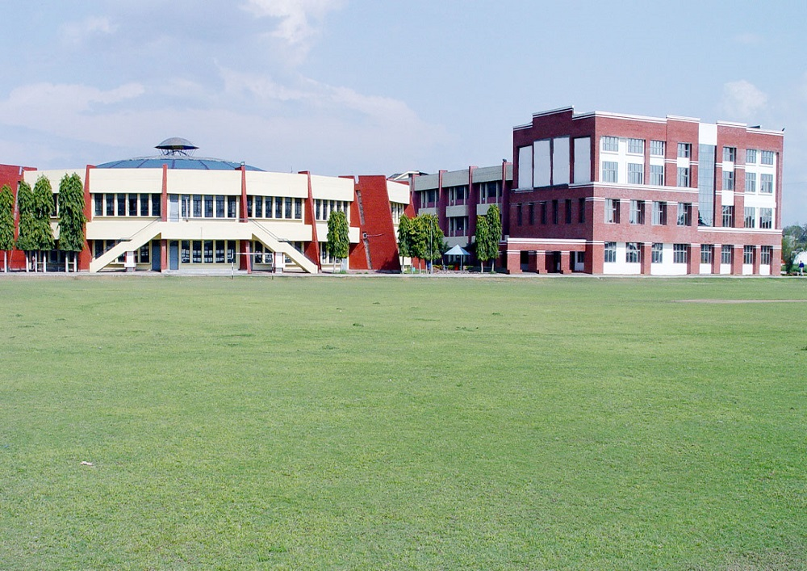
Photos of our school
The photos of Athletic meet
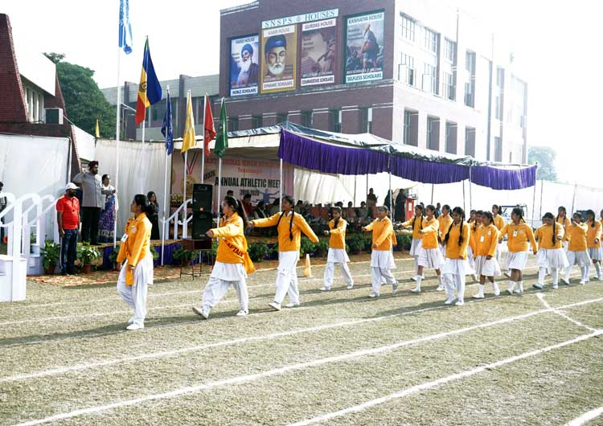
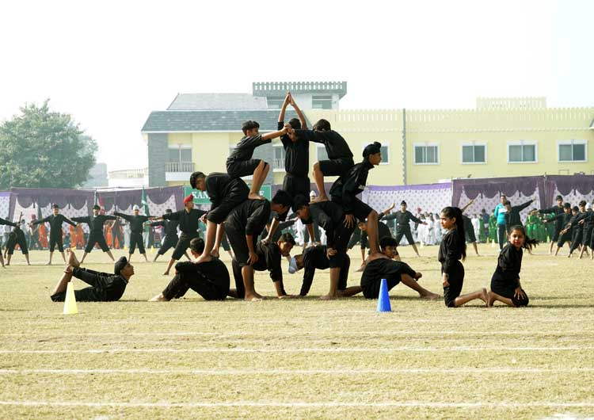
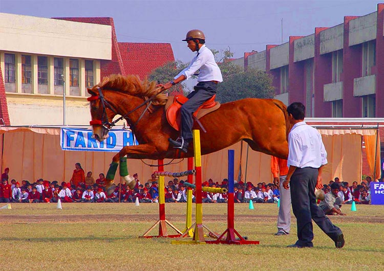
The photos of annual day
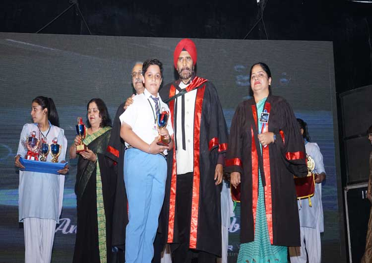
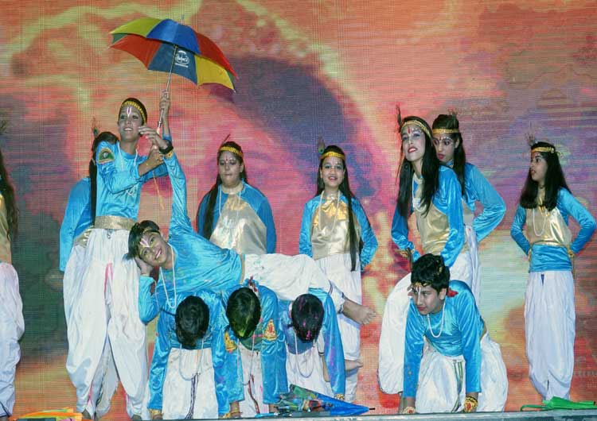
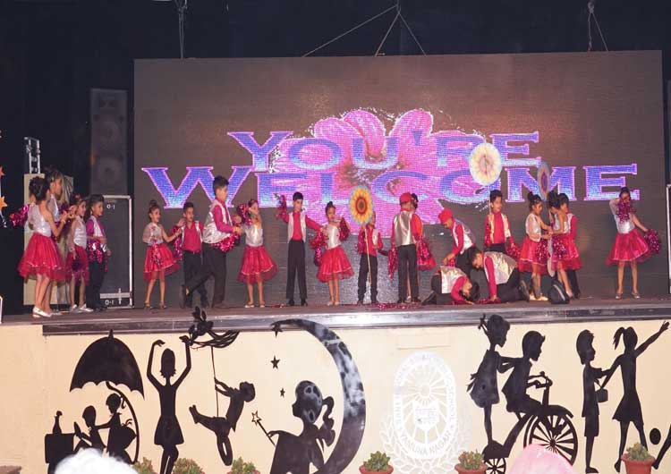
The photos of our school sports activities
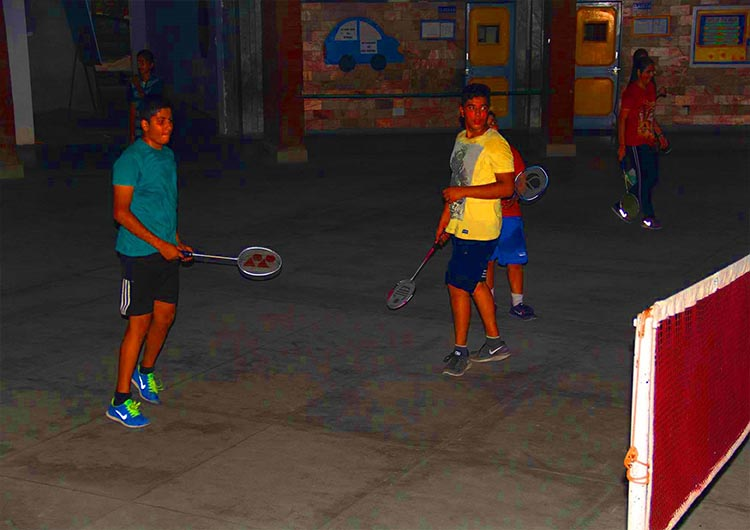
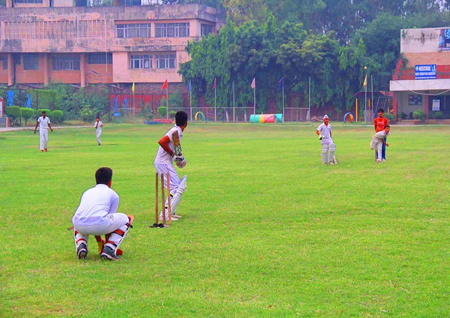
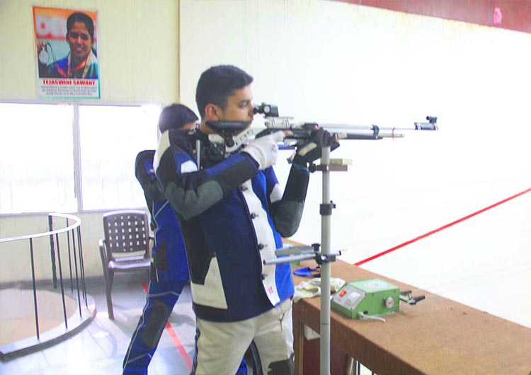
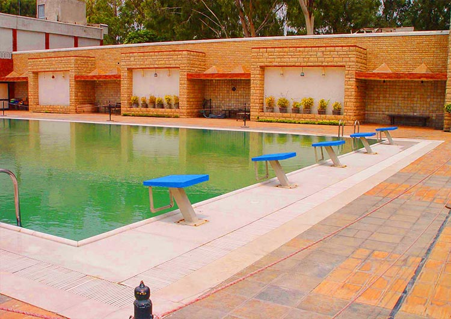
Details of our school
Our school motto
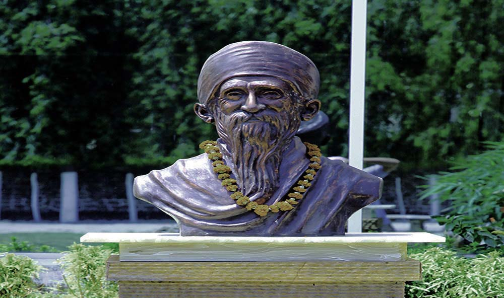
NIRBHAU NIRVAIR
WITHOUT FEAR AND WITH MALICE TOWARDS NONE
The school aims at training the children to be courageous, modest and truthful. The school is engaged in
continuous pursuit of excellence and our philosophy is to learn and grow together.
Provide a rich, diverse and challenging education through excellent and innovative teaching and learning.
Celebrate success, promote a "can do" attitude and inspire each to achieve their best.
Our school mission
Our mission is to prepare our students to meet the challenges of a dynamic and changing world.
Sant Nischal Singh Public School builds on its heritage, diversity and values, developing the qualities and
strengths of each young man; it engages with needs and interests of the society and with the challenges of
higher education and workplace.
Our mission is to develop young men with active and creative minds, a sense of understanding and compassion
for others, and the courage to act on their beliefs.
Teachers
Teachers are a special blessing from God to us. They are the ones who build a good nation and make the world
a better place. A teacher teaches us the importance of a pen over that of a sword. They are much esteemed in
society as they elevate the living standards of people. They are like the building blocks of society who
educate people and make them better human beings.
About us
The School Around Us is committed to providing a holistic learning community which encourages the growth of
mind, body and spirit, and which is actively involved in the local and global community.
Shriman, 108, Sant Pandit Nischal Singh Ji Maharaj Noble souls are rarely born.One such noble and spiritual
soul that enlightened and rejuvenated the city of Yamuna Nagar was Sriman, 108, Sant Pandit Nischal Singh ji
Maharaj.
Remember that you alone are responsible for your academic achievement. Your instructor is your guide and
your classmates may help you to understand your assignments; however, you are responsible for your own
success.
Why choose us
Good Environment
A positive school environment is defined as a school having appropriate facilities, well-managed classrooms,
available school-based health supports, fair disciplinary policy.
Modern Book Library
Home of the Modern Library .The library provides many children with their first chance to use and enjoy a
book. The school library is a welcoming place for study.
Multimedia Facilities:
Multimedia Facilities are all equipped with state of the art, networked, multimedia computers and various
audio/video equipment. These facilities provide a consistent set of software.Our networked computer lab gives access to our students to explore the world beyond the boundaries and
learn through various open. Our computer lab is equipped with latest technology.
Copyright © Ojas wadhwa All rights reserved!